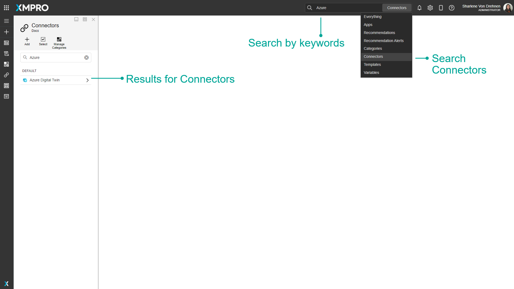
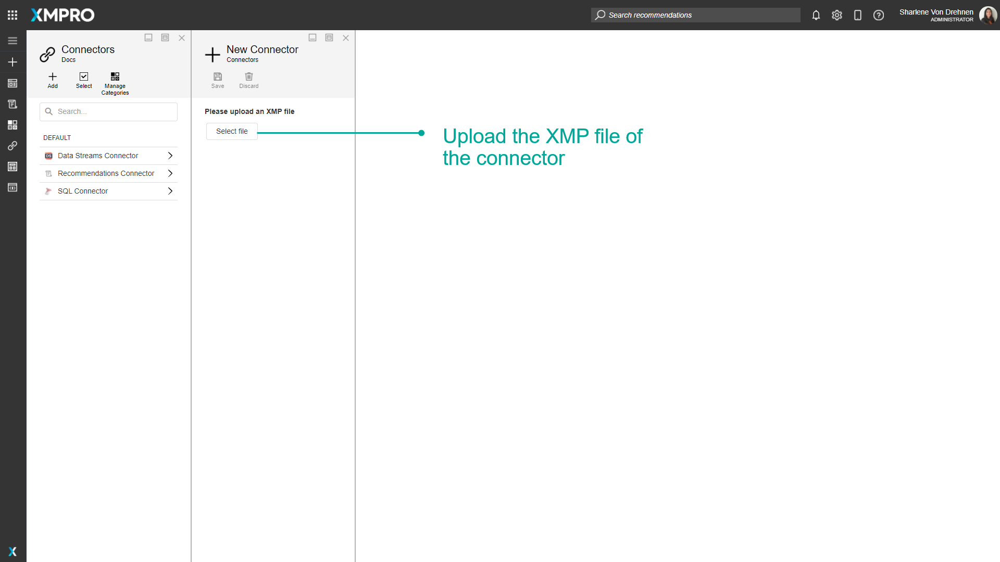
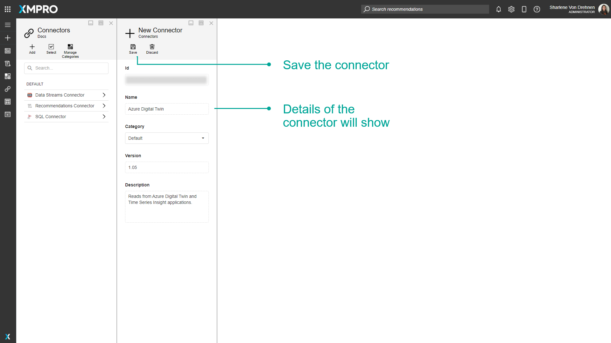
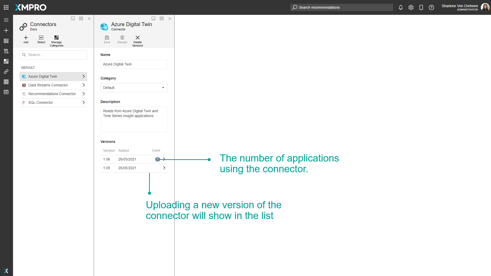
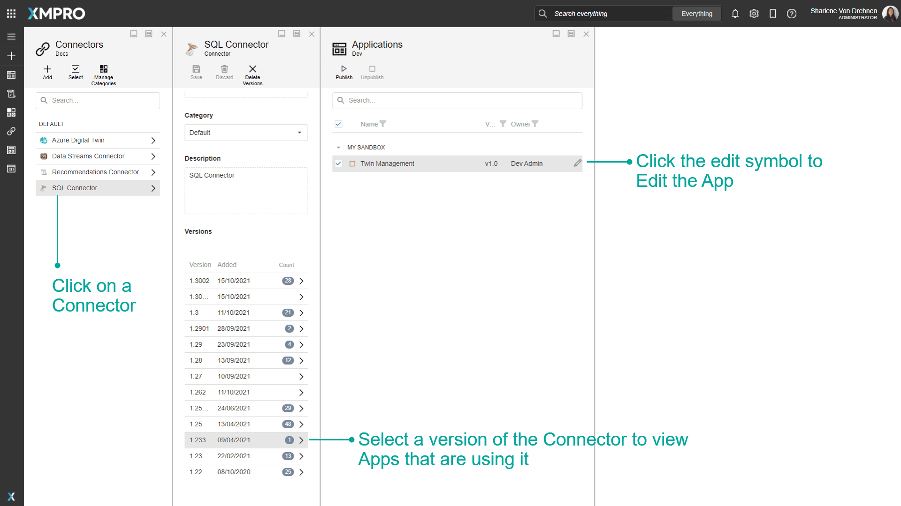
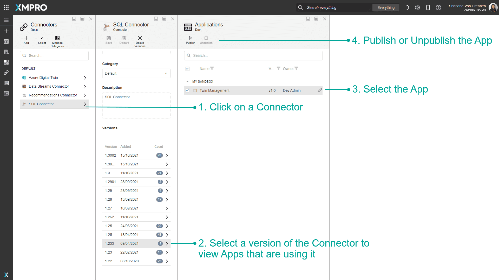

Connector
Overview
A Connector is a pre-built integration plug-in for the XMPro App Designer that allows you to connect to third-party data sources without writing code.
They can be used when integrating data from data sources such as a database into an Application. This can include real-time data from machines, websites, other streaming data, or contextual data such as the make or model of a certain item.
Connectors are useful if you want to use the data within an Application or display the data to the user on a page of an Application.
Data Sources can include databases, Data Streams, or Recommendations. See the Data Integration article for more details. You can assume that Connectors have already been set up by your Administrator.
Each Connector consists of code, settings, and other properties that are packaged into a file that can be uploaded to App Designer.
XMPro has a library of Connectors available to use. To acquire any of these Connectors, please contact your XMPro sales representative or write to us at support@xmpro.com. Alternatively, since Connectors can be written by anyone that has some knowledge of programming and has access to the required technologies, you can write your own Connector by following these instructions.
Category
Connectors can be grouped into categories. This category is separate from the App and Data Stream Categories.
Settings
A Connector consists of code and user settings. The code defines the actions a Connector performs in App Designer. The settings are the input for the code that executes, provided by the user when adding the Connector to App Designer, such as authentication credentials.
For example, consider the SQL Server Connector, which retrieves data from a SQL database. The settings a user must define for the Connector so it can do that are as follows:
- Name of the SQL Server instance
- SQL Server username
- Whether SQL Server authentication should be used or not
- SQL Server password
- Database to which the data should be written
Finding Connectors
The search bar can be used to find any specific Connectors that you may be looking for. There is a dropdown option where you can specify to search through everything in App Designer, or only for Connectors.

Adding a Connector
Connectors can be added by uploading their XMP file on the connectors page. Each version of a Connector has its own XMP file. When uploading an app, any missing Connectors that the app needs must be updated or uploaded for the app to be imported successfully.


Versions
Connectors can have multiple versions. For example, a new version of a Connector can be created if there are any changes or updates made to it. Changes or updates made to new versions of a Connector will not affect the previous versions.
Each version of a Connector has its own XMP file. When uploading a Connector, a specific version of that Connector will be uploaded. To upload a different version, you will need to upload the XMP file for that specific version you want to use.
When you view a Connector, you can see the list of specific versions for that Connector. The number of apps using each version is shown next to the version number. Apps that you do not have access to will not show on the list. When you upload a new version, the new version will be displayed in this list.
When selecting a Connector to use in an app, the application will automatically choose the latest version available.
Note
When a new version of a Connector is uploaded, any apps using older versions may need to be upgraded. See the Data Integration article for more information on how to upgrade an app's connection.

View and Edit Applications
There is an alternate way to view or edit Applications directly from the Connectors page. When viewing a Connector, you will see the number of Applications using each version of the Connector. Expand to see the full list of Applications, which can be viewed by clicking on the Application or edited by clicking the Edit button.

Publish and Unpublish Apps
You can also publish or unpublish an Application that uses that version of the Connector.
As an Admin, this is useful if you need to unpublish an Application and you don't have access to it. See the How to Admin Unpublish Override article for more details.

Actions on the Connector
| Action | Description |
|---|---|
| Add | Adds a new Connector. |
| Select | Selects multiple Connectors. |
| Delete | Deletes the Connector. |
| Manage Categories | Creates and edits categories to organize the Connectors. These categories are separate from the App and Data Stream Categories. |
| Save | Saves any changes made to the Connector up to this point. |
| Discard | Discards any changes made to the Connector up to this point. |
| Delete Versions | Deletes a selected version of a Connector. You can only delete versions that don't have any apps using that version of the Connector. If you don't have access to an app that a version is using, you still cannot delete the version. |
Further Reading
Last modified: July 28, 2025